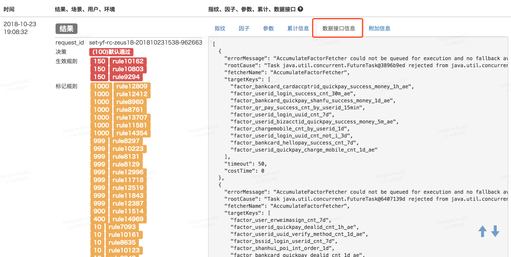

说明：fetcher异常日志指南
日志查询详情页面新增一个Tab：“数据接口信息”，如下图所示：

数据接口信息里展示的是：该请求过程中调用数据接口失败的信息，包括：
- erroMessage：错误信息
- rootCause：根因
- fetcherName：数据接口名称
- targetKeys：待获取的参数、因子名，也即这些参数、因子获取失败了
- timeout：该数据接口设置的超时时间
- costTime：调用该接口花费的时间
保存日期：2026-11-17 · 查看学城原文
日志查询详情页面新增一个Tab：“数据接口信息”，如下图所示：

数据接口信息里展示的是：该请求过程中调用数据接口失败的信息，包括：